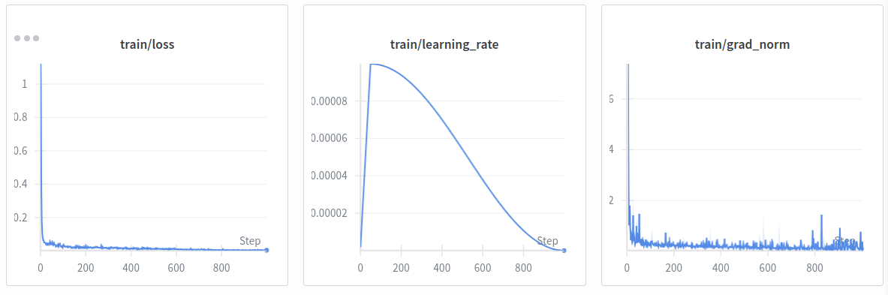

Setup for GR00T-N1.5 & Trossen Lerobot
Installing the repo
First, clone the repository.
git clone --depth 1 --branch n1.5-release https://github.com/NVIDIA/Isaac-GR00T.git
cd Isaac-GR00T
Then create a conda environment for it.
conda create -n groble python=3.10 -y
conda activate groble
First, let's setup the trossen_lerobot repo. Then, install the base dependencies. I used uv to download all the dependencies.
git clone https://github.com/TrossenRobotics/lerobot_trossen.git
cd lerobot_trossen && uv pip install -e .
# return to the Isaac-GR00T folder
cd ..
pip install --upgrade setuptools
pip install -e .[base]
Now it gets tricky, since my workstation is new--it's gpu architecture is sm120. I uninstall the torch from the dependencies and instead install the nightly build of PyTorch for CUDA 12.8. This step is only done if you have the Blackwell GPUs (check by running, nvidia-smi -L in the terminal).
pip uninstall torch torchvision
pip3 install --pre torch torchvision --index-url https://download.pytorch.org/whl/nightly/cu128
Then I install pytorch3d next.
export TORCH_CUDA_ARCH_LIST="12.0"
pip install --no-build-isolation "git+https://github.com/facebookresearch/pytorch3d.git"
Then reinstall the gr00t package, as well as flash-attn.
pip install -e .[base] --no-deps
pip install --no-build-isolation flash-attn
pip install numpy==1.23.5
Starting Their Demos
They begin with the quick start, where you can download their model checkpoint and run inference via client-server.
python scripts/inference_service.py --model-path nvidia/GR00T-N1.5-3B --server
Open another terminal and start the client. This pulls the model's response (action) from the server after giving it an observation.
python scripts/inference_service.py --client
Load the dataset
Next, run the script to load this dataset, which will start a pop-up showing the frames.
python scripts/load_dataset.py --dataset-path ./demo_data/robot_sim.PickNPlace
Run inference
I installed TensorRT as a tar file.
version="10.x.x.x"
arch=$(uname -m)
cuda="cuda-x.x"
tar -xzvf TensorRT-10.14.1.48.Linux.x86_64-gnu.cuda-12.9.tar.gz
ls TensorRT-10.14.1.48
export LD_LIBRARY_PATH=TensorRT-10.14.1.48/lib:$LD_LIBRARY_PATH
cd TensorRT-10.14.1.48/python
python3 -m pip install tensorrt-*-cp310-none-linux_x86_64.whl
Now deploy the policy... This step is where the trained model is converted to ONNX (Open Neural Network Exchange), optimized with TensorRT, and then run for inference.
# back in the Isaacc-GR00T folder
python deployment_scripts/export_onnx.py
bash deployment_scripts/build_engine.sh
python deployment_scripts/gr00t_inference.py --inference-mode=tensorrt
Finetune
Run this to fine-tune:
python scripts/gr00t_finetune.py --dataset-path ./demo_data/robot_sim.PickNPlace --num-gpus 1

Fine-tuning on Our Dataset
GR00T-N1.5 does not have pre-defined configs for robots like the Trossen MobileAI, where it is not a full humanoid yet it has bimanual arms that have end-effector control. Thus, we will have to customize our script.
Let's understand the format of the recorded data first. The Trossen MobileAI records its data in lerobot format, where it outputs parquet files containing the robot state and action vectors. Both arms' joints and velocities are already concatenated, with the grippers inside the flattened vector. This means that both arms are logged into one vector.
This is great, because we can treat the action and state as one modality, without need to split it by left or right arms. The format of the dataset is:
# Action (16-D)
0 linear_vel
1 angular_vel
2 left_joint_0
3 left_joint_1
4 left_joint_2
5 left_joint_3
6 left_joint_4
7 left_joint_5
8 left_joint_6
9 right_joint_0
10 right_joint_1
11 right_joint_2
12 right_joint_3
13 right_joint_4
14 right_joint_5
15 right_joint_6
# State (19-D)
0 odom_x
1 odom_y
2 odom_theta
3 linear_vel
4 angular_vel
5–11 left_joint_0 ... left_joint_6
12–18 right_joint_0 ... right_joint_6
# Cameras
observation.images.cam_high
observation.images.cam_left_wrist
observation.images.cam_right_wrist
Now here's a problem--like most of the VLAs I've worked with, GR00T-N1.5 has a specific way to read the data, and unfortunately, our dataset isn't fully readable by it yet.
Here are the changes I've done:
-
Add a custom config file for the Trossen MobileAI robot to the data_config.py file.
- As shown above, the cameras are conventionally named "observation.images...", but it must be changed.
- I removed all instances of that, so that only "cam_..." was left. This includes renaming the video folders in the dataset.
-
Added a
modality.jsonfile to thedataset/metafolder from our dataset. Something like this:
{
"state": {
"observation": {
"start": 0,
"end": 19,
"fields": {
"odom_x": {
"start": 0,
"end": 1,
"dtype": "float32"
},
"odom_y": {
"start": 1,
"end": 2,
"dtype": "float32"
},
"odom_theta": {
"start": 2,
"end": 3,
"dtype": "float32",
"range": [-3.1416, 3.1416]
},
"linear_vel": {
"start": 3,
"end": 4,
"dtype": "float32"
},
"angular_vel": {
"start": 4,
"end": 5,
"dtype": "float32"
},
"left_joint_0": {
"start": 5,
"end": 6,
"dtype": "float32",
"range": [-3.1416, 3.1416]
},...
}
}
},
"action": {
"action": {
"start": 0,
"end": 16,
"fields": {
"linear_vel": {
"start": 0,
"end": 1,
"absolute": true,
"dtype": "float32"
},
"angular_vel": {
"start": 1,
"end": 2,
"absolute": true,
"dtype": "float32"
},
"left_joint_0": {
"start": 2,
"end": 3,
"absolute": true,
"dtype": "float32",
"range": [-3.1416, 3.1416]
},...
}
}
},
"video": {
"cam_high": {
"original_key": "cam_high"
},
"cam_left_wrist": {
"original_key": "cam_left_wrist"
},
"cam_right_wrist": {
"original_key": "cam_right_wrist"
}
},
"annotation": {
"human.task_description": {
"original_key": "task_index"
}
}
}
- Must make sure
info.jsonmatchesmodality.json.
Deploying on the MobileAI (Software)
Let's now try to work on getting the policy deployed on the actual robot. Since GR00T-N1.5 uses a client-server setup, we need to tweak it to be able to send the inference to the robot configurations.
The documentation mentions 2 client modes--ZMQ and HTTPS. - ZMQ is lightweight and fast, making it good for local network. - HTTP is better for connecting remotely to the robot.
Let's use ZMQ, since we want to connect to the robot directly.
Troubleshooting
Error:
raise InvalidSchemaError from e
pydantic._internal._generate_schema.InvalidSchemaError
Solution: Ensure NumPy is compatabile with numpydantic and Pydantic. I did the following because I had NumPy v1.26.4.
# first check your NumPy version
python -c "import numpy; print(numpy.__version__)"
pip install pydantic
pip install --upgrade numpydantic
cd ~/IsaacGR00T
# rebuild gr00t
pip install -e .[base] --no-deps
Error:
zmq.error.ZMQError: Address already in use (addr='tcp://*:<port>')
Solution: Use another port.
python scripts/inference_service.py --model-path nvidia/GR00T-N1.5-3B --server --port <port>
# You will have to also point the client to the adjusted port
python scripts/inference_service.py --client --port <port>
Error:
RuntimeError: Server error: CUDA error: no kernel image is available for execution on the device
Solution: Download pre-built flash-attn wheels.
Error:
raise ImportError("torchcodec is not available.")
ImportError: torchcodec is not available.
Solution: My issue was that torchcodec was not compatible with my PyTorch version.
pip install torchcodec==0.5.0
Error: Not enought memory (dependent on size of dataset).
Solution: Change the batch size in Isaac-GR00T/scripts/gr00t_finetune.py to a smaller number.
Made by Jasmin Lin.